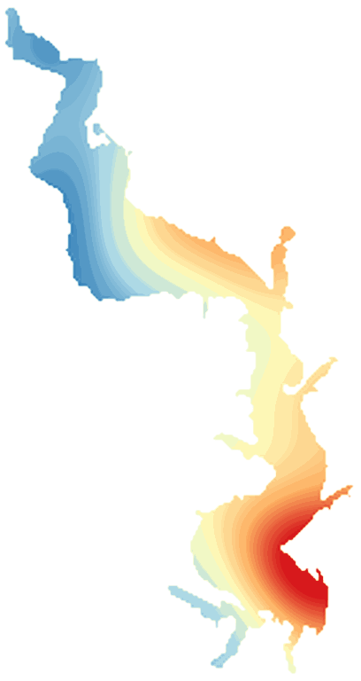

LakeScope › KS
Milford Lake today
Updated 2026-11-21 - Atlas Labs
Slightly murky, 56°F water, level falling, 1 ft above normal, windy Saturday (15 mph SW).
Water level
1146.17 ft
USGS gauge 06857050 - 2026-11-21
7-day trend: falling (-0.55 ft). Compared with normal for this date: +1.3 ft (same weeks, 2016-2025).
Water clarity and algae
Slightly murky Last clear view: a few days ago.
Surface temperature
56°F
seen from space on 2026-11-19

Ice
Open - 0% ice cover
Estimate from weather and satellite, not a measurement. Check the ice yourself before going on it.
Weather, next 3 days
| Day | Sky | High / low | Wind | Rain |
|---|---|---|---|---|
| Saturday | Mostly Cloudy then Slight Chance Showers And Thunderstorms | 67 / 40°F | 15 mph SW | 69% |
| Sunday | Sunny | 49 / 27°F | 15 mph N | 0% |
| Monday | Sunny | 45 / 26°F | 5 mph NE | 0% |
Sunrise 07:17 - sunset 17:08 - Waxing gibbous. National Weather Service.
Get the LakeScope app: alerts and the 3-D view of Milford Lake